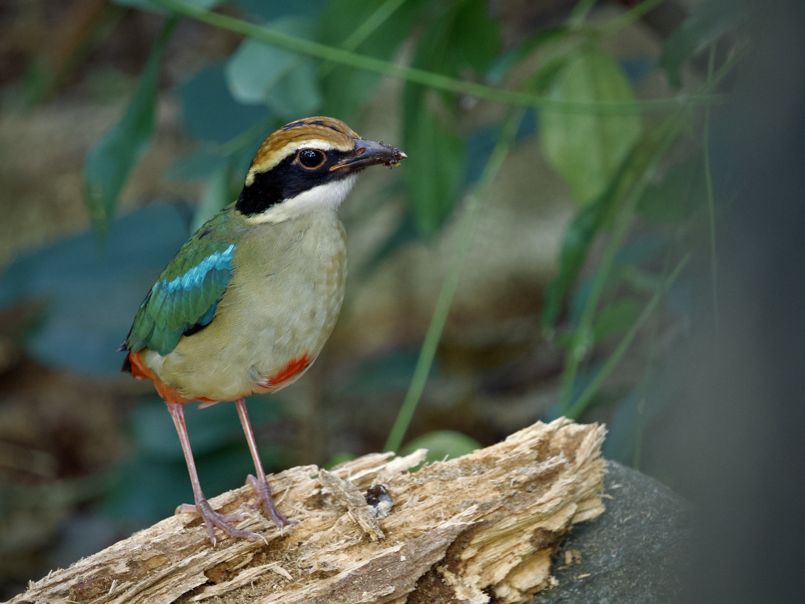
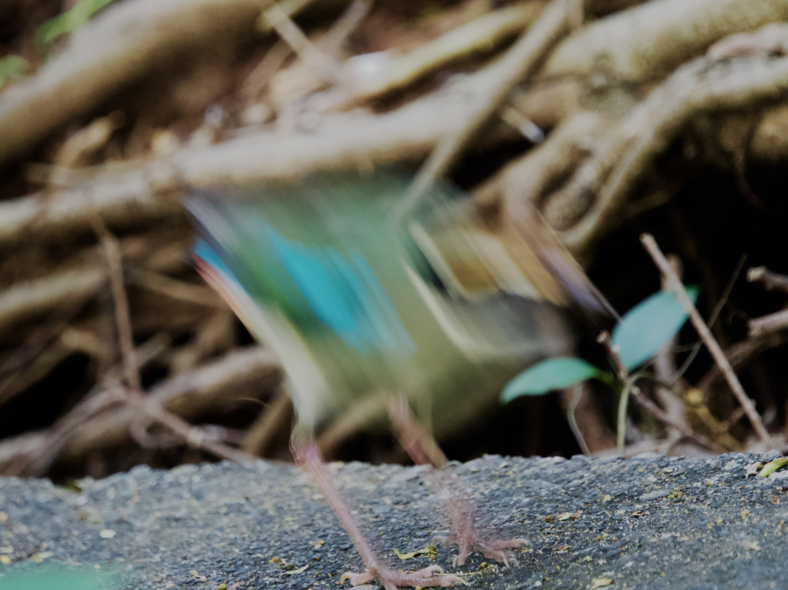

Fairy Pitta
Pitta nympha
Order: Passeriformes
Family: Pittidae

A colourful bird of the forest floor, known as the "eight-coloured bird" (八色鳥) or "eight-coloured thrush" (八色鶇) in Chinese. One can briefly pick out 8 colours from its plumage: (1) black #000000 of the crown stripe, eye mask and wing tips; (2) chestnut #C47418 of the lateral crown stripes; (3) white #FFFFFF of the throat and wing patches; (4) pale yellow-buff #F7D688 of the supercilium; (5) green #0EAD73 of the back and wings; (6) cyan #04DBDB of the shoulder patches and rump; (7) buff #E0D3A8 of the breast and flanks; and (8) red #EB092B of the belly and undertail coverts. If one counts the pink #F5C1C1 of the legs, that would be 9 colours. Juvenile is duller and has a pale bill tip. This one is exceptionally confiding, coming as close as a few metres from a whole row of photographers.

Found in humid tropical forests. Don't be fooled by pictures of good views of a Fairy Pitta; it is typically shy and hard to see well. Something like this might be a more common impression of a pitta. In flight, it is not unlike a White-throated Kingfisher , which is also bluish with white wing patches and fast, effortful wingbeats.